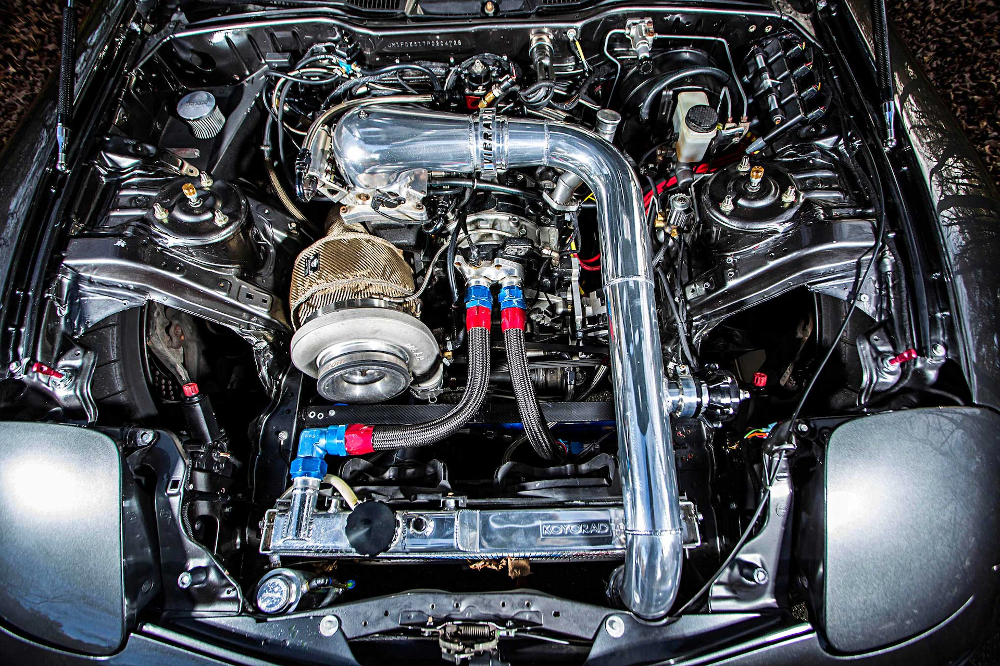

-
Styl i Design:
RX-7 FD3S wyróżnia się charakterystycznym, płynnym designem, który zaprojektowano z myślą o aerodynamice i wydajności. Jego nisko osadzona sylwetka, muskularne nadkola i opływowe linie nadają mu agresywny i dynamiczny wygląd. Charakterystyczne okrągłe reflektory poprzednich modeli RX-7 zostały zastąpione reflektorami pop-up, co nadaje FD3S nowoczesny i futurystyczny wygląd.
-
Silnik:
Serce RX-7 FD3S stanowi rewolucyjny, dwuwałkowy, 1,3-litrowy silnik rotacyjny Wankla, znany jako 13B-REW. Jest to turbodoładowany silnik, który oferuje imponującą moc wyjściową i szybkie reakcje na gaz. 13B-REW jest jednym z najbardziej znanych silników rotacyjnych i cieszy się uznaniem za swoją charakterystyczną moc, płynną pracę i potencjał tuningowy.
 -
Wydajność:
Dzięki niskiej masie i dobrze wyważonej konstrukcji, RX-7 FD3S zapewnia doskonałe właściwości prowadzenia i ekscytującą jazdę. Jego zwrotność, reaktywność i szybkość sprawiają, że jest to samochód doskonały zarówno na torze, jak i na ulicy. RX-7 FD3S jest znany ze swojego dynamicznego przyspieszenia i płynnego prowadzenia, co sprawia, że jazda tym samochodem jest niezwykle satysfakcjonująca.
-
Kultura i dziedzictwo:
RX-7 FD3S zdobyła sobie miejsce w kulturze samochodowej jako ikona lat 90. Jej pojawienie się w filmach, grach komputerowych i mediach przyczyniło się do zwiększenia jej popularności i statusu legendy. Dzięki swojemu unikalnemu silnikowi, doskonałym osiągom i pięknemu designowi, RX-7 FD3S jest nadal bardzo ceniona przez miłośników motoryzacji na całym świecie, a dobrze utrzymane egzemplarze są często poszukiwane przez kolekcjonerów.
Mazda RX-7 FD3S to nie tylko samochód, ale prawdziwa legenda, która nadal zachwyca i inspiruje miłośników motoryzacji na całym świecie. Jej innowacyjny design, rewolucyjny silnik i doskonałe osiągi sprawiają, że jest to jeden z najbardziej pożądanych sportowych coupe wszech czasów.